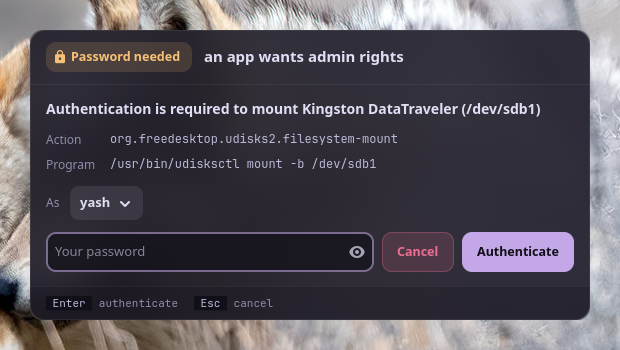

Pramāṇa (प्रमाण) is Sanskrit for "proof, means of knowing": the window where you prove it's you.
Apps on Linux ask for admin rights through polkit: mounting a USB drive, changing the time zone, installing an update from a software centre, pkexec. polkit then asks the session's authentication agent to get your password. GNOME and KDE bring one; sway, Hyprland, river and other compositors don't, and without it those requests just fail, often with no message at all. pramana is that agent: a small GTK 4 window that shows polkit's message, what's asking, and takes your password.
#Features
- Says who's asking: polkit's message, the action id (
org.freedesktop.udisks2.filesystem-mount) and the program or command line, as polkit reports them. - Your password goes to polkit only: to its setuid helper, which checks it with PAM. pramana never stores, logs or passes it on.
- Pick who to authenticate as when polkit accepts several admins (you first, when you're one).
- Try again after a wrong password; Esc cancels and the app is told no.
- Looks like your desktop: Vyom's panels, in your varna theme, the same window style as anumati.
- Always there: a systemd user service in the graphical session that restarts on failure and steps aside if another agent already runs.
- Root-owned install: no program running as you can edit the window that takes your password.
#Install
Requirements: Linux with a Wayland or X11 desktop, systemd's user manager, polkit, Python 3.11+, PyGObject, GTK 4 and libadwaita.
git clone https://github.com/Theyashsawarkar/pramana ~/.local/share/pramana
~/.local/share/pramana/install.sh # asks for sudo once
pkexec true # the window opens; authenticateinstall.sh installs /usr/local/lib/pramana/ and /usr/local/lib/systemd/user/pramana.service root-owned, links /usr/local/bin/pramana, and enables the service, which starts with your graphical session (graphical-session.target). On Arch it installs the dependencies too; elsewhere install them first (Debian/Ubuntu: python3-gi gir1.2-gtk-4.0 gir1.2-adw-1 gir1.2-polkit-1.0; Fedora: python3-gobject gtk4 libadwaita polkit-libs).
~/.local/share/pramana/install.sh --check # what differs from this clone
git -C ~/.local/share/pramana pull && ~/.local/share/pramana/install.sh # update
~/.local/share/pramana/install.sh --uninstallIf your desktop doesn't start graphical-session.target, start it from your compositor's config instead: sway exec systemctl --user start pramana. Remove any other agent you run (polkit-gnome, lxpolkit, hyprpolkitagent): one session has one agent.
#What you see
When an app asks, a window opens with polkit's message ("Authentication is required to mount Kingston DataTraveler"), the action and the program, and a password field. Type your password and press Enter. A wrong password says so and lets you try again.
| Key | Action |
|---|---|
Enter | Authenticate with the typed password |
Esc | Cancel the request (the app is told no) |
pramana --preview shows the window with a sample request, without polkit, to check how it looks in your theme.
#Security
| Guarantee | How |
|---|---|
| The password goes to polkit only | It's handed to PolkitAgent.Session, which writes it to polkit's setuid helper (polkit-agent-helper-1), which checks it with PAM. The field is cleared as soon as it's sent; nothing is logged but the action id and the outcome. |
| What the window says is what polkit said | The message, action and program come straight from polkit. The window's code is root-owned in /usr/local, Python runs isolated (-I), and the theme's colours are read as plain #rrggbb only and used only while every text stays readable (ADR 2). |
| Only your session | It registers for your graphical session only; polkit itself decides which requests need a password and whose. |
What it can't do: protect you from a program that is actively malicious and already running as your user. Such a program could draw a lookalike window, or stop the service and register its own agent. That's true of every polkit agent on a Linux desktop. Report security problems privately: SECURITY.md.
#How it works
- The
pramanauser service runs/usr/local/lib/pramana/agent.pyin your graphical session. It registers with polkit as the authentication agent for your session (XDG_SESSION_ID, else logind's display session). - An app asks polkit for an action that needs a password. polkit calls pramana with the message, the action, details about the caller, and the identities it accepts.
- pramana opens the window. You type your password; it starts a
PolkitAgent.Sessionfor the chosen identity, which runs polkit's helper and answers its prompt with the password. - The helper tells polkit whether it worked; polkit grants or refuses the app. Esc, or closing the window, cancels the request.
Logs: journalctl --user -u pramana.
#Troubleshooting
- No window appears; the app says "not authorized". Check the service:
systemctl --user status pramana. "can't register as the session's polkit agent" means another agent already runs: remove it, thensystemctl --user restart pramana. - The window says the password didn't work, though it's right. polkit asks for an admin's password: your user must be one (the
wheelgroup on Arch,sudoon Debian), or pick the admin under As. - The window looks unstyled or tiny. Install libadwaita; on a tiling compositor, float it: sway
for_window [app_id="^io\.github\.theyashsawarkar\.Pramana$"] floating enable.
#Contributing
Bug reports, ideas and pull requests are welcome: see CONTRIBUTING.md, and CHANGELOG.md for what changed in each release. Security reports go privately (SECURITY.md).
pramana comes from Vayu, a keyboard-driven Wayland desktop, and works on any Linux desktop without its own polkit agent.